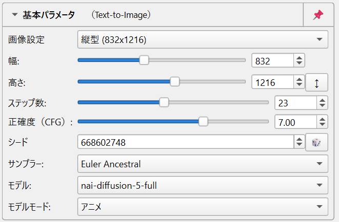
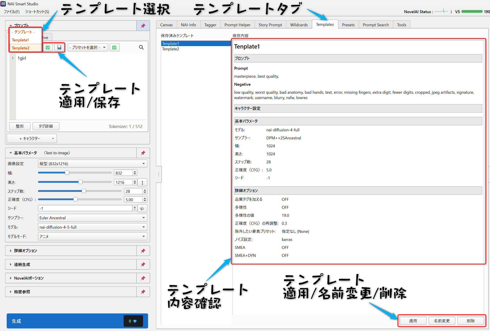

はじめに
NAI Smart Studio は、NovelAI の画像生成を扱いやすくするためのデスクトップツールです。Text-to-Image / Image-to-Image / Inpaint に加え、プロンプト編集、参照画像、検索、履歴管理をまとめて利用できます。
画面構成
- 左パネル: Prompt / Negative、キャラクター、生成パラメータ、連続生成、参照画像を設定します。
- 中央パネル: Canvas で画像を確認・編集します。各タブからタグ入力補助、プロンプト検索、生成情報の確認などを利用できます。
- 右パネル: History に保存画像を表示します。クリックでCanvasに表示し、Shift+クリックで生成設定などを取り込めます。

初回セットアップ
利用を始めるには、NovelAI の API キーを登録します。初回起動時の案内、または「ファイル」→「設定」から設定画面を開けます。

APIキーの取得
- NovelAI公式サイト にログインします。
- 右上のアカウントメニューから「アカウント設定」を開きます。
- 「永続的APIトークンを取得」から API キーをコピーします。

登録と初期設定
本ソフトの「API Key Management」でKey欄に貼り付け、「追加」を押します。接続テストの結果を確認し、設定画面の「保存」を押してください。複数のキーを登録した場合は、使うキーを選んで「有効化」で切り替えます。
- 出力先: 生成画像を保存するフォルダを指定します。
- Wildcardフォルダ: Wildcardsで使うファイルの参照先です。
- 表示言語: 日本語・英語などから選択します。

画像生成の基本
左パネルで描きたい内容と生成設定を決め、「生成」を押すと画像が作成されます。生成結果はCanvasに表示され、保存後はHistoryから確認・再利用できます。
- Promptに描きたい内容、Negativeに避けたい内容を入力します。
- モデルと画像サイズを選び、必要に応じて各パラメータを調整します。
- 生成ボタンの推定Anlasコストを確認し、「生成」を押します。

プロンプト編集
- Prompt / Negative: タグや文章を入力します。「タグ詳細」でタグ情報、入力欄のトークン表示でプロンプトの量を確認できます。
- キャラクター: 「キャラクターを追加」で、人物ごとにPrompt / Negativeと位置を設定できます。使わない欄はOFFにします。折りたたむだけでは生成対象から外れません。
- 検索・置換: Ctrl + Fで検索、Ctrl + Hで置換します。メインのPrompt / Negativeと全キャラクターの入力欄が対象です。
- コメント: 一時的に使わない部分を生成対象から外せます。Ctrl + /は選択範囲またはカーソル位置の項目、Ctrl + Shift + /または行番号クリックは行全体を切り替えます。
基本パラメータ

- 画像設定 / 幅・高さ: 正方形・縦長・横長などの定型サイズを選ぶか、64px刻みで指定します。通常生成の上限は長辺2048px・短辺1536pxです。
- モデル: V3 / V4 / V4.5 / V5（Full / Curated）から選択します。V4以降はアニメ / ケモノも切り替えられます。
- Steps / CFG / Sampler: 生成のステップ数、プロンプトへの従い方、サンプリング方式を調整します。
- Seed:
-1はランダムです。固定値を指定すると同じ条件を再利用しやすくなります。
「詳細オプション」では品質タグやCFG再調整などを設定します。V5では軽めの品質タグと透明背景も選べます。推定Anlasコストは、モデル・サイズ・Stepsなどの変更に合わせて更新されます。
Ctrl + Enterで通常生成、Ctrl + Alt + Enterで1回だけ生成できます。繰り返し生成する場合は連続生成を参照してください。
画像インポート
保存画像を編集したり、過去の生成設定を再利用したりするときに使います。ドラッグ＆ドロップ、Ctrl + O、HistoryのShift+クリック、画像の右クリックメニューの「インポート」から開けます。

取り込み先を選ぶ
- Image-to-Image / Inpaint: 画像をCanvasへ読み込み、元画像として使います。
- NovelAIポーション / 精密参照: 参照画像のスロットへ追加します。複数画像をまとめて取り込めます。
- Tagger: 画像からタグを推定します。
- NAI-info: 画像に埋め込まれた生成情報を確認します。
- メタデータ: Prompt、Negative、キャラクター、生成設定、Seedなどから、必要な項目を選んで現在の入力へ反映します。
メタデータの「展開・抽選前で読み込む」をONにすると、元のワイルドカード・抽選式を読み込みます。元画像の再現を優先する場合はOFFにします。
Image-to-Image / Inpaint
元画像をもとに生成する機能です。Image-to-Imageは画像全体を、Inpaintはマスクなどで指定した範囲を描き直します。
基本の流れ
- 画像をCanvasへ読み込み、下部の「i2iモード」を押します。
- 一部を変更する場合はマスクまたはフォーカス範囲を指定します。指定しなければImage-to-Imageになります。
- Prompt、強度、必要に応じてノイズや出力サイズを調整し、「生成」を押します。

マスク・画像編集
- マスク: ブラシ・長方形・折れ線で変更範囲を指定します。
- フォーカス: 小さな部分を一時的に拡大してInpaintし、元画像へ合成します。参照余白の内側が変更対象です。枠の×または右クリックで解除できます。
- ペイント: 画像へ直接描画します。右クリックで画像の色を取得できます。
- 編集: 切り取り、キャンバスサイズ変更、移動・拡大縮小・回転ができます。
「キャンバス分割」をONにすると、左に元画像、右に生成結果を表示します。元画像とマスクを保ったまま繰り返し生成したいときに使います。
ディレクターツール
不要物・背景の除去、線画・スケッチ化、カラー化、表情変更などを適用します。変換前の画像には画像履歴から戻れます。
かんたんアップスケール
Canvasの画像を高解像度化したり、描き込みを調整したりする機能です。用途に合わせて独自方式と公式方式を選べます。
使い方
- 画像をCanvasへ読み込み、下部の「かんたんアップスケール」を押します。
- 方式を選び、倍率や強度・レベルを調整します。
- 出力サイズと推定Anlasコストを確認し、実行します。

方式の選択
- 独自アップスケール: Opus専用。RealESRGAN / Waifu2xなどで拡大後、分割して再生成します。アップスケーラー、倍率（最大4倍）、強度を指定します。
- 品質向上（公式）: モデルと元画像に対応した倍率と、レベル1～5を選びます。MaxはV5専用です。1xでも再生成し、「高度な設定」では強度とノイズを個別に調整できます。
連続生成
同じ設定で繰り返し生成したり、生成キューの候補を順に試したりするときに使います。
- 左パネルの「連続生成」を開き、枚数指定・時間指定・中断するまで、のいずれかを選びます。
- 生成間の待機時間と、エラーが起きた場合の動作を設定します。
- 連続生成を開始します。Ctrl + Shift + Enterでも開始できます。

生成キューがある場合は、画面の入力よりもキューの内容を優先して処理します。
NovelAIポーション
参照画像の雰囲気や画風を生成に反映します。複数の画像をスロットに登録して組み合わせることもできます。V5では利用できません。

使い方
- 左パネルの「NovelAIポーション」を開き、「＋」から画像またはポーションファイルを追加します。
- 参照強度と情報抽出度を調整し、使うスロットをONにします。
- 生成を実行します。未調合のスロットは、先に自動で調合されます。
保存と再利用
.naiv4vibe / .naiv4vibeBundleとして保存・読込できます。Bundle情報を含めた画像の書き出しにも対応します。使わないスロットはOFFにして残しておけます。
精密参照
キャラクターデザインや絵柄を参照画像へ近づけたいときに使います。V4.5対応モデル向けの機能で、V5では利用できません。

使い方
- 左パネルの「精密参照」を開き、「＋」で参照画像を追加します。
- 参照する内容をキャラクター / 絵柄 / 両方から選びます。
- 強度と忠実度を調整し、生成します。
複数画像を登録でき、スロットごとにON / OFFを切り替えられます。背景プレビューの表示は設定で変更できます。
NAI-info
画像に埋め込まれた生成情報を確認するタブです。過去画像のPrompt、Negative、キャラクター、Seedなどを見直し、次の生成に再利用できます。
- NAI-infoタブへ画像をドロップするか、インポート画面から送ります。
- 概要、各プロンプト、生成設定、元メタデータを確認します。
- 再利用する場合は「text2imgへ送る」または「img2imgへ送る」を押します。
配置予定: images/NAI_INFO_001.png
NAI-info タブで画像プレビューと生成情報が表示されている画面
記録がある画像では、Actual Promptから抽選後の内容を確認・コピーできます。元の式を読み込むオプションは画像インポートと共通です。
Tagger
画像からタグ候補を推定し、Prompt作成に使います。画像の特徴を言葉にしたいときや、複数画像のタグをまとめて書き出したいときに便利です。初回はToolsなどから追加セットアップを行います。
使い方
- 画像をTaggerへ読み込みます。インポート画面からも送れます。
- 使用するモデルと、一般 / キャラクター / 作品・IPのしきい値を設定し、タグ推定を実行します。
- 候補とスコアを確認して必要なタグを選び、「選択タグをプロンプトに追加」を押します。まとめて反映する場合は「タグをプロンプトに追加」を使います。

候補の確認と一括処理
- タグ情報: 日本語別名やPrompt Helperのカテゴリ情報を確認できます。?からDanbooru Wikiを開けます。
- フォルダ一括: 複数画像のタグをまとめて推定し、caption用のテキストファイルへ書き出せます。
Prompt Helper
タグを検索したり、カテゴリから選んだりしてPrompt / Negativeに追加する入力補助です。タグ名を思い出せないときや、関連する表現を探すときに使います。
タグを探して追加する
- 英語タグ・日本語別名・説明文で検索するか、身体・服装・表情などのカテゴリから候補を探します。
- タグの詳細や関連タグを確認します。
- 追加先のPrompt / Negativeを表示し、タグをダブルクリックするか「現在のタブへ追加」を押します。
配置予定: images/PROMPT_HELPER_001.png
Prompt Helper の検索欄、カテゴリ、タグ一覧、詳細表示が見える画面
- お気に入り: よく使うタグを登録し、あとから呼び出せます。
- カスタムタグ: 自分用のタグやカテゴリを追加できます。
Story Prompt
NovelAIのテキスト生成を使い、あらすじから物語と画像生成用Promptを作ります。複数の場面をまとめて画像化したいときに使います。Story Promptタブでテキスト生成モデルを選びます。「モデル確認」で利用可能なモデルの一覧を更新できます。
使い方
- 入力: あらすじ・登場人物・シーン数・レーティング・Prompt言語を設定し、ストーリーを生成します。
- ストーリー: 内容を確認・編集します。必要なシーンだけ再生成することもできます。
- カット・プロンプト: 「カットに分解」で画像にする場面へ分け、各カットのPromptと生成枚数を調整します。
- 生成: 「生成予定を確認」で使うカットを選び、「生成キューに追加」を押します。メイン画面の画像モデル・サイズを確認し、「生成」で処理を開始します。
登場人物の固定タグやPromptプリセットも指定できます。作業はプロジェクトとして保存・再読込でき、生成用YAMLや保存用YAML / JSONへ書き出せます。
Wildcards（ランダム要素）
候補から単語やフレーズを選んでPromptへ挿入する機能です。髪色・服装・背景などを変えながら、まとめて生成するときに使います。

使い方
- 設定したWildcardフォルダにTXT / YAML / JSONファイルを用意します。TXTは1行に1候補を書きます。
- Wildcardsタブでファイルや項目を選び、内容を確認して構文をコピーします。
- Promptへ貼り付けて生成します。ランダムに選ぶ場合はDynamic Prompt、順番に使う場合はSequential Promptを使います。
書き方
{A|B|C}: 直接書いた候補からランダムに1つ選択します。__name__/__folder/name__: ファイルから選択します。__file/key__: YAML / JSONのキーから選択します。[SEQ:__name__]: 連続生成で候補を順番に使います。
ファイルは「編集」へ切り替えると内容を修正・保存できます。外部のテキストエディタも使えます。TXTの空行・#行は無視され、CHAR:行は展開後にキャラクタープロンプトへ取り込まれます。
テンプレート
プロンプトと生成設定をまとめて保存し、あとから一括で呼び出す機能です。よく使う構成を切り替えたり、別の作業を挟んで元の設定へ戻したりするときに使います。

保存される内容
- プロンプト: Prompt / Negative、キャラクター別の入力と位置を保存します。
- 生成設定: 画像サイズ、モデル、Steps、CFG、Seed、Samplerなどの基本パラメータと、品質タグなどの詳細オプションを保存します。
保存と呼び出し
- 保存したいPromptと生成設定を画面上で整えます。
- Prompt上部の保存アイコンから、新規保存または上書きします。
- 使うテンプレートを上部の一覧で選び、チェックボタンで適用します。
Templatesタブでは内容の確認・適用・名前変更・削除ができます。一覧を選ぶだけでは現在の入力は変わりません。
Presets（プリセット）
よく使うタグの追加や、不要語の除外・整形をまとめて保存する機能です。品質タグや作風などを用途別に用意し、現在のPrompt / Negativeへ反映できます。

設定できる内容
- 先頭タグ / 末尾タグ: Promptの先頭や末尾に共通のタグを追加します。
- 共通Negative: 避けたい要素をNegativeへ追加します。
- 自動除外: 指定した単語を取り除きます。
- 整形: 重複タグや余分なスペースを整理します。
保存と適用
Presetsタブで内容を設定し、名前を付けて保存します。使うときはPrompt上部の一覧で選び、チェックボタンで適用します。Text-to-Image生成時にも適用され、キュー生成では「生成時にプリセットを適用」の設定に従います。
画像サイズやモデルなど、生成設定もまとめて保存したい場合はテンプレートを使います。
Prompt Search（プロンプト検索）
タグ条件でプロンプトを検索し、結果を生成キューへまとめて追加する機能です。複数の候補を順に試して画像を生成したいときに使います。
セットアップ
初回はTools、または「設定」→「検索」からセットアップを実行します。完了後にPrompt Searchを有効にすると、中央にタブが表示されます。Taggerも使えるようになります。

検索から生成まで

- 含めるタグ・除外タグ・レーティングを指定して検索します。
- 結果を確認し、追加件数を指定して「検索結果を生成キューに追加」を押します。
- 画像モデルやサイズなどを確認し、「生成」でキューを順に処理します。
補助機能
- 出力フィルタリング: キューへ追加するときに、作品名・キャラクター名・絵師・衣装・特徴・色などのタグを除外できます。
- Prompt Upscaler: キュー処理中にタグ推論を使い、Promptを補強します。
Chunk（プロンプトチャンク）
よく使うプロンプト片を保存し、必要なときに部品として挿入する機能です。品質タグ・作風・共通フレーズなどを分類して管理できます。
セットアップ
「設定」→「プロンプトチャンク」で有効にし、セットアップウィザードを開きます。メール / パスワードまたはGoogleログイン補助で認証すると、Chunkタブから利用できます。

登録と挿入
- Chunkタブでカテゴリを作り、チャンクを追加します。
- 名前とプロンプトの内容を入力して保存します。
- 一覧でチャンクを選び、「プロンプトに挿入」を押します。ダブルクリックでも挿入できます。

「更新」でサーバー側の内容を取得し直せます。Prompt入力中はCtrl + Pまたは@でもチャンク候補を呼び出せます。
Tools
補助機能のセットアップと、使うタブの有効 / 無効を切り替える画面です。
非表示にしても設定・入力・データは保持されます。CanvasとToolsは常に表示されます。
設定・その他機能
「ファイル」→「設定」から、保存先、入力補助、外部連携などを変更します。
主な設定
- 一般: APIキー、表示言語、画像やお気に入りの保存先などを設定します。
- 画像形式・ファイル名: 保存形式とファイルの命名規則を設定します。
- 入力補助: タグ補完、日本語別名、強調表示、カンマ補助、関連タグの表示を調整します。
- 検索 / チャンク: 追加機能の有効化、セットアップ、認証状況を確認します。
- その他: ログや容量に関する設定を変更します。
関連タグはクリックでPromptへ追加し、右クリックでNegativeへの追加や一時的な非表示を選べます。Ctrl + Spaceで最初の候補へ移動します。候補数と対象カテゴリは「入力補助」で変更できます。
Eagle連携
Eagleで画像を管理している場合は、「連携」で送信先などを設定します。生成画像の自動送信や、画像の右クリックメニューからの手動送信に対応し、Promptや生成情報をタグ・メモとして付けられます。
履歴・画像操作
- フォルダ選択: 表示する画像と、その後の生成画像の保存先を切り替えます。
- クリック / Shift+クリック: Canvasに表示 / インポート画面を開きます。ドラッグでも取り込めます。
- ハート: お気に入り保存先へ画像をコピーします。未設定の場合は保存先を選びます。
- 複数選択・削除: Ctrl+クリックで複数選択できます。Historyにフォーカスがある状態でCtrl+Aは全選択、Deleteは選択画像をごみ箱へ移動します。
- 右クリック: 保存、コピー、Eagle送信、保存先フォルダを開く、インポートを選べます。
設定画面一覧
一般

画像形式・ファイル名
入力補助

連携

検索

チャンク

その他

ショートカット
メニュー「ショートカット」からも確認できます。入力欄・画像・Historyなど、操作する場所にフォーカスを合わせて使います。

生成・実行
- Ctrl + Enter: 現在のモードで生成
- Ctrl + Alt + Enter: 1回だけ生成
- Ctrl + Shift + Enter: 連続生成開始
キャンバス / マスク
- ← / →: 画像履歴 Undo / Redo
- Ctrl + Z / Ctrl + Y: マスク Undo / Redo
プロンプト編集
- Ctrl + F / Ctrl + H: 全プロンプトの検索 / 置換
- Ctrl + /: 選択範囲・カーソル項目のコメント切替
- Ctrl + Shift + / / 行番号クリック: 行全体のコメント切替
- Ctrl + ↑ / ↓: 強調を増減
- Alt + ↑ / ↓: 現在行・選択行を移動
- Shift + Enter: 下に空行を追加
- Ctrl + P /
@: Chunk候補表示
入力補助ポップアップ
- Enter / Tab: 候補確定
- Esc: 閉じる
- ↑ / ↓ / PageUp / PageDown: 候補を移動
画像ファイル操作
- Ctrl + O: 画像を開く
- Ctrl + S / Ctrl + C: 名前を付けて保存 / 画像をコピー
- Ctrl + E: Eagleへ送信
- Ctrl + Shift + E: 保存先フォルダを開く